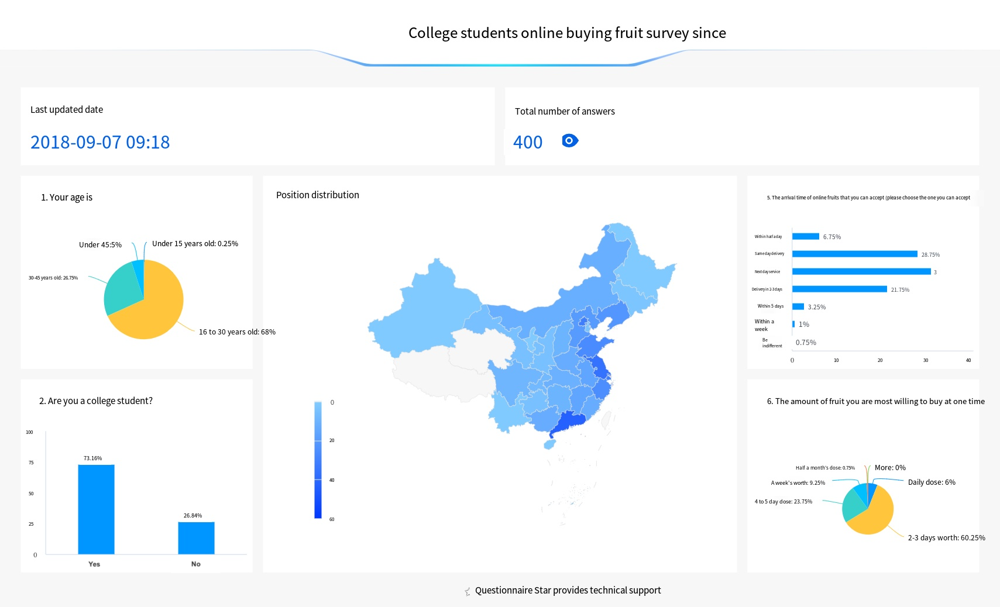

Fruitech

KEY WORDS
TEAM MEMBERS
Eva: Team leader/ Presentation/ UX Research
Xinliang: Finance/ Development/ UX design
Tianyu: Finance/ Management
Guanyang: Management/ Marketing
Brief
Fuitech is a platform dedicated to helping farmers in less developed areas in China sell their fresh agricultural produce more efficiently and directly. It aims to build a bridge connecting farmers and consumers in the city tightly.
UX RESEARCH
What is Fruitech?
Fuitech is a platform dedicated to helping farmers in less developed areas in China sell their fresh agricultural produce more efficiently and directly. It aims to build a bridge connecting farmers and consumers in the city tightly. We have assembled a team of 30 people, with a core team of 5. The technical, operation, design, and management teams were established respectively. In the summer of 2018, our team traveled to Shimian County, Sichuan Province, China, to examine the fruit farmland, sorting system, and related farmer organizations. We have also entered into a partnership with a local charity organization, Shanpin.
Fruitech is an entrepreneurial project incubated by ShanghaiTech University. This project won first place in the 2018 Social Practice Project of ShanghaiTech University, and the third prize in the Shanghai ZhiXing Cup.
The Problem
Southwest China is rich in agricultural products, such as fruits, tea leaves, and so on. There is plenty of sunshine and proximity to water, still maintaining a natural, organic agricultural method. However, their fresh and high-quality products are often unknown by people in cities because of their mountainous location, backward development, and insufficient exposure to new technology.
On the other hand, urban consumers, especially young adults, are struggling with the lack of access to such cost-effective, high-quality fruits. Our users often need to go to fruit stores or supermarkets to buy fruits. However, in big cities like Beijing and Shanghai, fruit prices are often too high that young adults, who are just starting out in their careers, cannot afford good quality fruit.
We found a gap here why can't the good-quality fruits in the Southwest be sent directly to the pockets of urban consumers?
HMW Questions
Research
We collected a total of 400 questionnaires from all over China, covering most provinces, with data from first-tier cities such as Beijing, Shanghai, and Shenzhen as the main sample. Of these, 273 samples were between the ages of 16 and 30, which fit our target user group of young adults and were considered valid answers. We conclude with the following insights.
Consumer Type: Our target users are mainly college students, accounting for 73%. They buy fruits for personal consumption only and have little reference value for the consumption orientation and program design of buying fruits as a family unit.
The frequency of fruit purchases: The large value of deviation in the results of this answer indicates that the frequency of fruit purchases is a more personal habit and is not statistically significant.
Ways of purchasing fruits: For the analysis of the channels of buying fruits, more than 70% of consumers still choose to buy fruits offline. Considering the lower selectability of online food and the fact that there are now more fruit store operators, it is relatively difficult to sell fruits directly online. However, according to the current network situation, the online fruit market still has a large development space.
Analysis of online purchases: For online purchases, more than half of the customers would place the highest value on quality, and a quarter places the highest value on price. 14% of the customers list speed of delivery as the top consideration. More than 8% consider whether it is a local specialty.
Analysis of the tendency to buy fruit types: The proportion of people who buy common fruits (apples, pears) and those who buy uncommon fruits (cranberries, carrots) is almost the same, so the fruit types can get information from the kinds of fruits chosen by users, and at the same time, even though there are more kinds of local fruits (both common and uncommon fruits), the outlook is rather optimistic.
Analysis of the reasons why consumers don't buy fruits frequently: More than half of the consumers do not buy it because of their personal preference; nearly half of the consumers consider the seasonal factor and some fruits are only produced in a specific season so they do not buy it often; about 40% of the consumers have considered the price factor and nearly 30% of the consumers have considered that they do not buy it often because they have not consumed this fruit before and are not familiar with it.
Analysis of the number of fruits purchased: Taking the purchase of oranges as an example, more than 60% of consumers bought 4-8 pieces at a time, and the proportion of those below 4 and above 8 was basically the same, nearly 20% respectively. Only one percent of consumers bought more than 20 at a time.
Delivery: Nearly half of the consumers think it can't take more than 4 days, and more than 40% of consumers can tolerate fruit arriving within a week. Less than 10% of consumers can endure two weeks.
UX DESIGN
Brainstrom
Solutions
We designed a gamification solution based on the user's age, preference, and need for fruits. We hope to introduce the culture of fruit origin and cultivate users’ habit of eating fruits regularly and healthily in the game. It not only sells fruits but also promotes cultural exchange between western mountainous areas and developed cities on the eastern coast. Let the young people in the city know more about the culture of the western mountainous areas.
The product is a mini-game, similar to QQ Farm, where you can expect products by planting things. Based on this background, we have launched the current model.
Cultural Stories
Cultural Stories: Set up a photo editing team to create narrative videos based on local video footage. (All videos are in the language of Mandarin)
Photos